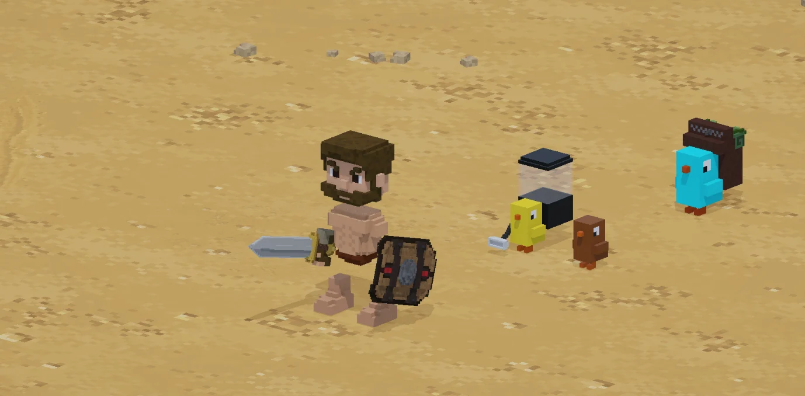

CAPTURA DEL PROYECTOUNITY / C# / VOXEL
Cube Colosseum
Una arena de gladiadores donde el combate deja huella, voxel a voxel.
Combate con enemigos y aliados, equipamiento y decisiones tácticas. El modo Estratega permite dar órdenes, mientras los sistemas de inventario y progresión acompañan cada enfrentamiento.
Explorar los sistemas del juego
Combate y estrategia
Comportamientos de enemigos y aliados, formaciones, selección de objetivos y feedback de impacto. Órdenes tácticas desde una vista isométrica.
Un mundo que se desarma y reconstruye
Destrucción corporal, recolección de restos y fabricación de pociones. La regeneración voxel acompaña la recuperación de vida.
Equipo y progresión
Inventario, armas, armaduras, gemas y consumibles conectados al combate. Incluye un prototipo de campaña de 40 pisos, con persistencia y balance aún en desarrollo.